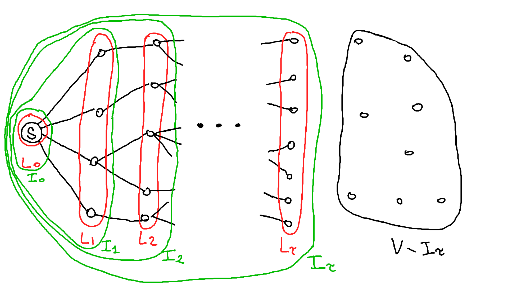
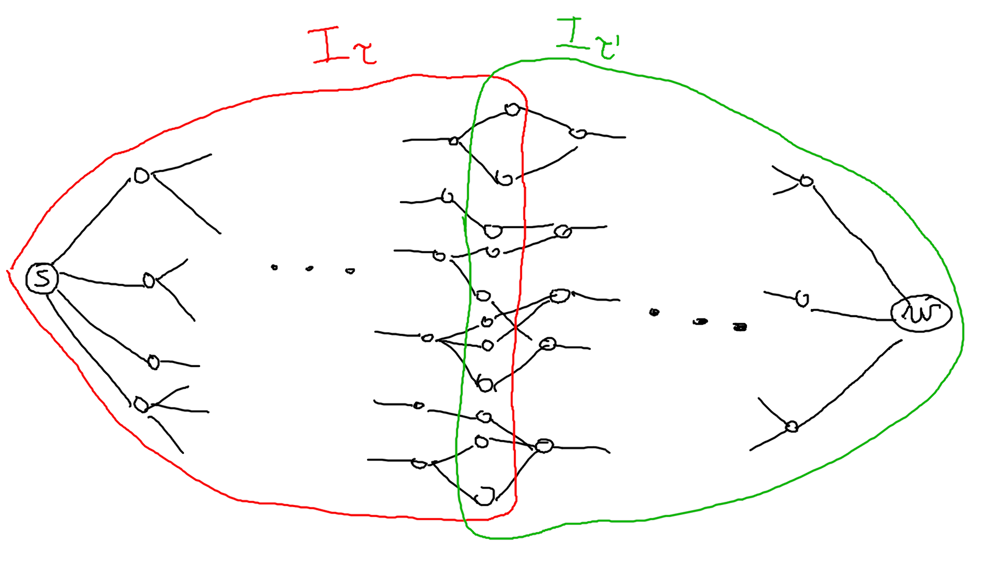
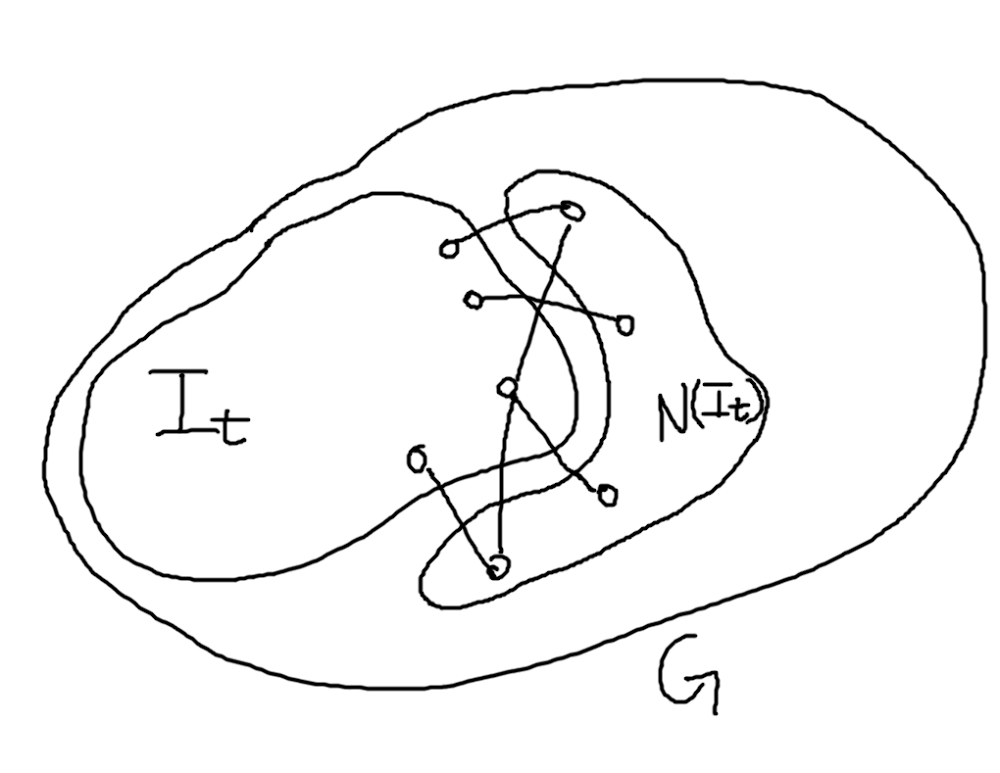

ADRC - Lesson 14
Indice
1 Expanders
Generalmente si fanno studi epidemici su modelli modelli omogenei, ovvero modelli in cui ogni individuo può entrare in contatto con un altro in maniera omogenea, ovvero uniformemente a caso.
Questi modelli in realtà non sono per niente realistici, in quanto il grafo delle relazioni è una clique.
In un contesto reale invece, il grafo delle relazioni che ci sono tra gli individui è molto più sparso di una clicque. Perciò quello che ci si può chiedere, esistono modelli di grafi più sparsi che però non impediscono le diffusioni? In termini più precisi, esistono modelli di grafo con densità \(o(n^2)\) nei quali però il broadcasting di un'informazione o la diffusione di un'infezione tramite protocolli di gossip termina in tempo \(\Theta(\texttt{POLY}(\log{n}))\)?
Una caratteristica necessaria che un grafo di questo tipo dovrebbe avere è un perimetro basso, perché in un grafo con perimetro massimo (ovvero \(n - 1\)) non c'è modo di diffondere un'formazione in tempo poli-logaritmico. Ancora, dovrebbe avere una buona connettività tra i nodi, ovvero una fault-tollertant1. Descriviamo quindi una famiglia di grafi che hanno tali caratteristiche.
Def (node-expansion) Dato un grafo \(G=(V,E)\) \(\Delta\)-regolare, ovvero con grado massimo \(\Delta\), per ogni sottoinsieme \(S \subset V\) la sua node-expansion è definita come \[ \vert N(S) \vert \;\; where \;\; N(S) \equiv \lbrace v \in V \setminus S \vert (u,v) \in E \land u \in S \rbrace \]
Def (\(\alpha\)-expander) Per ogni costante fissata \(\alpha \geq 0\), diremo che un grafo \(G\) è un \(\alpha\)-expander se ogni sottoinsieme \(S \subset V\) t.c \(\vert S \vert \leq \frac{n}{2}\), ha espansione almeno \(\vert N(S) \vert \geq \min{\lbrace n, \alpha \vert S \vert \rbrace}\).
L'interesse nei \(\Omega(1)\)-expanders è motivato del seguente teorema
THM Consideriamo la famiglia infinita di grafi al crescere della loro dimensione \[ \lbrace G_n = (V_n, E_n) \vert V = \left[ n \right] \land n \geq 1 \rbrace \] Se esiste una costante assoluta \(\alpha > 0\) tale che, per \(n\) sufficiente grande, ogni grafo \(G_n\) è un \(\alpha\)-expander, allora il diametro di \(G_n\) è \(O(\log{n})\).
Inoltre, sotto le stesse assunzioni, per disconnettere totalmente ogni sottoinsieme \(S \subset V_n\), con \(\vert S \vert \leq \frac{n}{2}\), bisogna rimuovere un numero lineare in \(\vert S \vert\) di archi.
Proof per dimostrare il primo enunciato verrà fatta una visita
BFSin ampiezza. Consideriamo una qualsiasi sorgente \(s \in V\), ed applichiamo la visita in ampiezza su \(s\) che però si ferma non appena visita più di \(\frac{n}{2}\). Più precisamente, sia \(L_t\) l'insieme dei nodi al livello \(t \geq 0\) dell'alberoBFSrisultante, e sia \(I_t = \bigcup_{i=0}^{t} L_i\) l'insieme di tutti i nodi che appartengono ad un livello al più \(t\), la visitaBFSsi fermerà quando si arriverà ad un livello \(L_\tau\) tale che \[ \tau = \min{\lbrace t \geq 1 : \vert I_t \vert > \frac{n}{2} \rbrace} \]
Figura 1: Risultato della visita
BFSa metà.Quello che ci interessa dimostrare è che \(\vert I_t \vert\) cresce in maniera esponenziale.
Per prima cosa vediamo come cresce \(\vert L_t \vert\) in funzione di \(\vert I_{t-1} \vert\). Per \(t = 1\) avremo che \[ L_1 = N(s) \implies \vert L_1 \vert \geq 1 \]
Osservando che \[ L_t = N(I_{t-1}) \] possiamo definire la relazione più generale \[ \vert I_t \vert = \vert I_{t-1} \vert + \vert L_t \vert = \vert I_{t-1} \vert + \vert N(I_{t-1}) \vert \geq \vert I_{t-1} \vert + \alpha \vert I_{t-1} \vert = (1 + \alpha)\vert I_{t-1} \vert \]
"Srotolando" questa relazione avremo che \[ \vert I_t \vert \geq (1 + \alpha)\vert I_{t-1} \vert \geq (1 + \alpha)^2\vert I_{t-2} \vert \geq ... \geq (1 + \alpha)^{t-1}\vert I_1 \vert \geq (1 + \alpha)^{t-1} \]
Infine ponendo \(\tau \approx \log_{(1+\alpha)}{\left(\frac{n}{2}\right)} \in \Theta(\log{n})\), otterremo che \(\vert I_\tau \vert > \frac{n}{2}\). Ciò implica che il numero di nodi a distanza \(\tau\) da \(s\) sono almeno \(\frac{n}{2}\).
Consideriamo ora un altro nodo \(w \in V \setminus I_\tau\) e ripetiamo lo stesso tipo di visita
BFSpartendo da \(w\). Grazie ancora al fatto che \(G\) è un \(\alpha\)-expander, avremo che dopo \(\tau' \in \Theta(\log{n})\) livello dell'alberoBFS\(w\) può raggiungere almeno \(\frac{n}{2}\) con distanze logaritmiche. Dato che entrambe le visite, quella che parte da \(s\) e quella che parte da \(w\), raggiungono almeno la metà dei nodi, avremo che i due almberiBFSsi intersecano. Perciò avremo che \(s\) e \(w\) sono distanti al più \(\tau + \tau' \in \Theta(\log{n})\), implicando così che il grafo \(G\) \(\alpha\)-expander ha diametro logaritmico (per un \(n\) sufficientemente grande).
Figura 2: Le due visite
BFSche si incrociano.Infine per dimostrare la robustezza di \(G\) basta offervare che dato che ogni \(S\) in questione ha una \(\alpha\)-espansione, perciò per disconnettere \(S\) bisogna rimuovere \(\Omega(\alpha \vert S \vert )\) archi \(\square\).
1.1 The Existence of Sparse Expanders
[da approfondire …]
2 The PULL Protocol over ∆-regular expanders
Consideriamo una versione del protocollo probabilistico PULL per il broadcasting.
Le assunzione sono che il grafo in questione \(G=(V,E)\) è un \(\alpha\)-expander \(\Delta\)-regoalre, con \(\Delta \in O(1)\).
Cio implica che \(G\) è molto sparso.
Data una sorgente \(s\) dal quale far partire il broadcast di un messaggio M, il protocollo \(\mathcal{PULL}(G,s)\) segue il seguente comportamento:
- al tempo \(t_0 = 0\) la sorgente \(s\) è nello stato
INFORMED, mentre ogni altro nodo è nello statoACTIVE. - ad un generico tempo \(t \geq 1\) ogni nodo \(u\) nello stato
ACTIVEsceglie u.a.r. un suo vicino \(v \in_U N(u)\) ed esegue un'azione dipull:- se \(v\) è nello stato
INFORMED, allora \(u\) si fa inviare una copia del messaggio da \(v\) e passa nello statoINFORMED - altrimenti rimane nello stato
ACTIVE
- se \(v\) è nello stato
- i nodi nello stato
INFORMEDnon fanno nessuna azione volontaria, perciò rispondono solamente alle richieste dipull. - il protocollo termina quando tutti i nodi sono nello stato
INFORMED.
2.1 Analisi Mean-Field
THM Sia \(G=(V,E)\) un grafo \(\Delta\)-regolare con \(\alpha\)-espansione, dove \(\alpha\) è una qualsiasi costante positiva fissata. Applicando il protocollo \(\mathcal{PULL}(G,s)\), per una qualsiasi sorgente \(s\), verrà terminato il task del prodcast in tempo \(O(\log{n})\) w.h.p.
Proof Per semplicità verrà fatta un'analisi di tipo mean field2 del protocollo \(\mathcal{PULL}(G,s)\), tralasciando l'alta probabilità.
Definiamo la seguente sequenza di variabili aleatorie
\begin{align*} I_0 &= \lbrace s \rbrace\\ I_t &= \lbrace v \in V \; | \; v \mbox{ is informed in some round } t' \leq t \rbrace \end{align*}L'obiettivo è dimostrare che la dimensione di \(I_t\) cresce esponenzialmente veloce al crescere di \(t\).
Fissato un \(t \geq 1\), definiamo con \(N(I_t)\) l'insieme dei nodi al di fuori di \(I_t\) che però hanno almeno un vicino in \(I_t\), ovvero \[ N(I_t) \equiv \lbrace v \in V \setminus I_t \; | \; \exists (u,v) \in E : u \in I_t \rbrace \]

Figura 3: \(I_t\) e \(N(I_t)\).
Ora per ogni \(v \in N(I_t)\) definiamo la v.a. binaria \(Y_v\) che vale 1 se \(v\) fa pull su un nodo \(u \in I_t\) e quindi diventa
INFORMEDal tempo \(t + 1\), e vale 0 altrimenti. \[ Y_v = \begin{cases} 1 &\mbox{if } v \mbox{ get informed at time } t + 1\\ 0 &\mbox{otherwise} \end{cases} \] con probabilità \[ \mathcal{P}(Y_v = 1) = \frac{\vert I_t \cap N(v) \vert}{\Delta} \geq \frac{1}{\Delta} \] e di conseguenza con media \[ \mathbb{E}\left[ Y_v \right] \geq \frac{1}{\Delta} \]Considerando \(\vert I_t \vert \leq \frac{n}{2}\), possiamo dare un lowerbound al numero di nodi \(v \in N(I_t)\) sfruttando l'\(\alpha\)-esapndibilità di \(G\) \[ \vert N(I_t) \vert \geq \alpha \vert I_t \vert \]
Applicando queste due disuguaglianze possiamo minorare il numero medio di nodi informati al tempo \(t + 1\) come segue
\begin{align*} \mathbb{E}\left[ \vert I_{t+1} \vert \right] &= \vert I_t \vert + \sum_{v \in N(I_t)}\mathbb{E}\left[ Y_v \right]\\ &\geq \vert I_t \vert + \alpha \vert I_t \vert \frac{1}{\Delta}\\ &= \left( 1 + \frac{\alpha}{\Delta}\right) \vert I_t \vert\\ &= (1 + \Omega(1))\vert I_t \vert \end{align*}Ciò implica che in tempo logaritmico il broadcasting del messaggio
Minformera almeno la metà dei nodi (in media).
Infine, come nella dimostrazione del primo teorema di questa lezione, si può applicare lo stesso ragionamento per la restante metà di grafo e dimostrare ancora che in tempo logaritmico verranno informati i restanti nodi \(\square\).